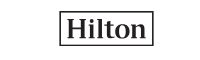

Welcome to Command center consist of Incident Management , Quality Coaches and PMO team. Incident management team handles Major incidents like Priority 1 and Priority 2, opens the bridge and engage the stakeholders for issue resolution. Quality coaches monitor the call quality of analyst, involved in RCA ,escalation handling and provide feedback to agents.
